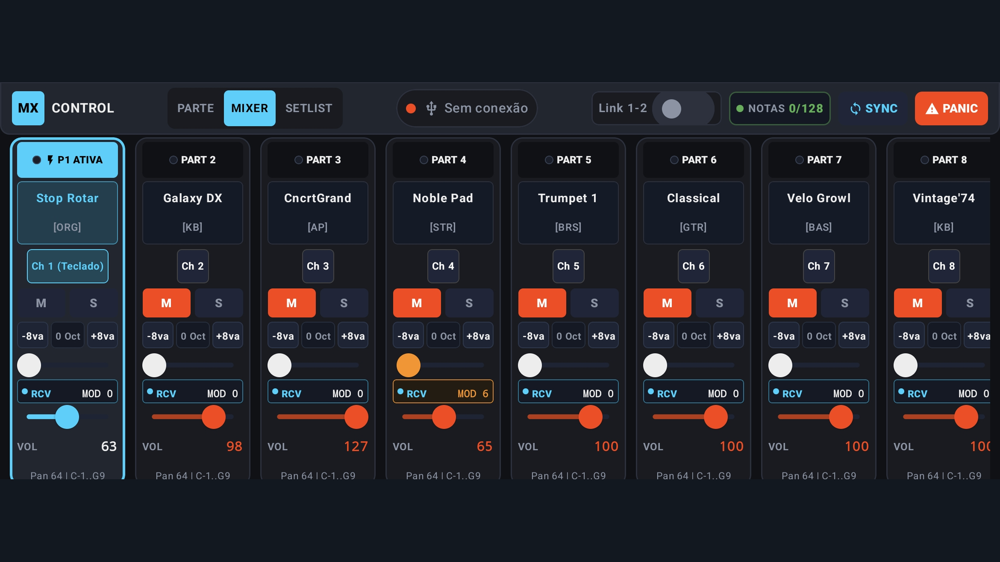
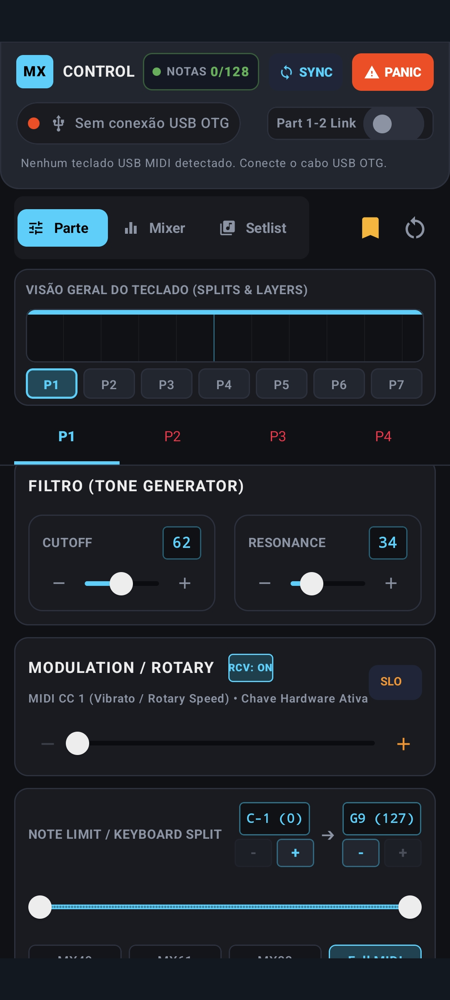
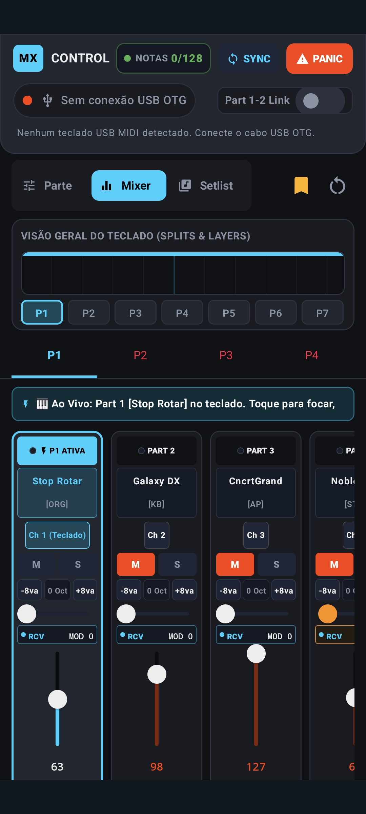
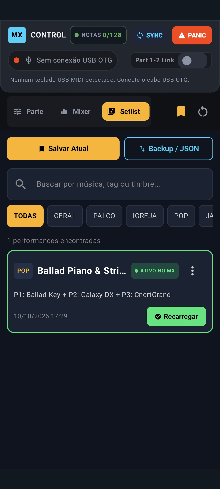
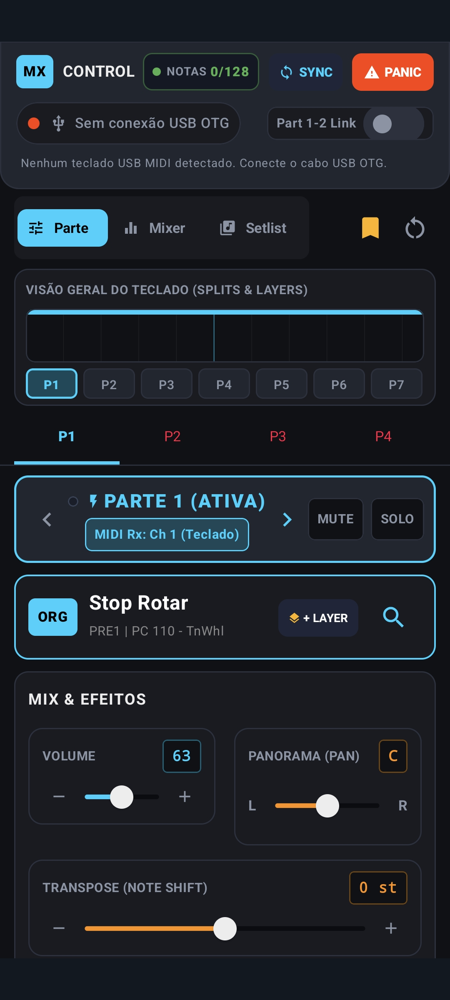

Multi-Layer sem limites, Bluetooth MIDI sem fio e troca rápida de repertório na ponta dos seus dedos. Compatível com MX49, MX61 e MX88.

Elimine as limitações do display monocromático de 2 linhas do hardware e tenha controle visual total sobre o consagrado gerador de som do Yamaha MX.
Supere o limite de apenas 2 sons simultâneos do painel físico. Empilhe 3, 4 ou mais timbres em camadas ricas e complexas (Pianos, Pads, Cordas e Sintetizadores) com controle individual de volume, oitavação e alcance no teclado.

Liberdade e estabilidade máxima: elimine cabos no palco conectando-se a adaptadores Bluetooth MIDI BLE de baixa latência, ou conecte diretamente via cabo USB OTG com resposta instantânea e latência zero garantida.

Organize suas apresentações por música e bloco de show. Mude timbres, volumes e afinações com um único toque na tela sem pausas constrangedoras. Salve, compartilhe e faça backup completo das suas performances em arquivos JSON.

Controle cirúrgico do seu som: faders virtuais longos para mixagem de volume, ajuste de Panorâmica Estéreo, envios de Reverb e Chorus, além de modulação do Filtro VCF (Cutoff e Ressonância) com resposta visual de LEDs MIDI neon.

Configuração descomplicada, sem necessidade de computador ou placas de áudio adicionais.
Ligue o celular ou tablet ao teclado usando um adaptador USB OTG na porta USB TO HOST, ou emparelhe via adaptador Bluetooth MIDI sem fio.
No painel do teclado, pressione [UTILITY], vá até [MIDI] e certifique-se de que a opção MIDI IN/OUT esteja configurada como USB.
Autorize a permissão USB. O app enviará a sincronização automática de todas as 16 partes e o indicador ficará verde instantaneamente!
Desenvolvido com mapeamento SysEx exato para a família de sintetizadores Yamaha MX.
49 teclas sensíveis à velocidade
61 teclas • O queridinho das bandas ao vivo
88 teclas com ação de piano pesada GHS
O aplicativo foi otimizado para rodar com leveza e fluidez em smartphones e tablets.